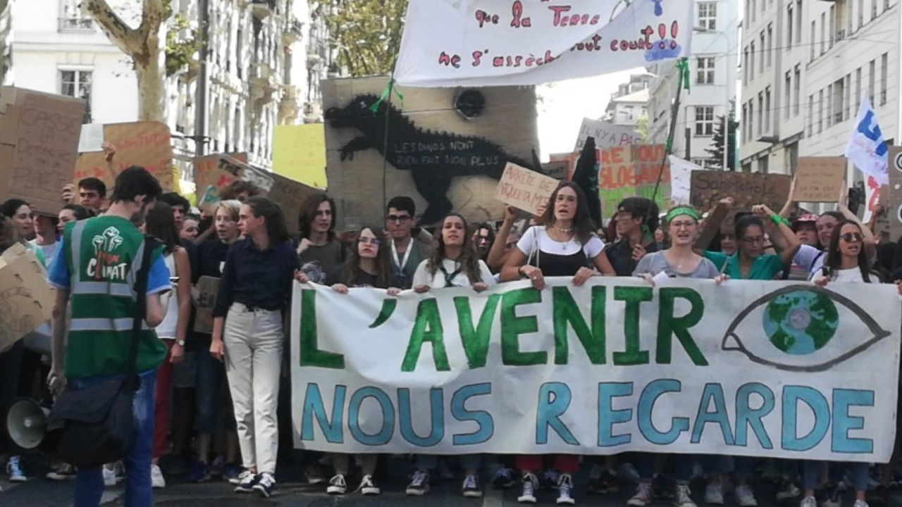
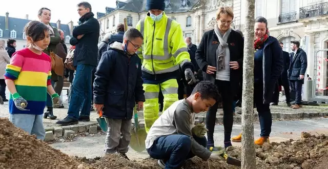
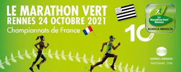
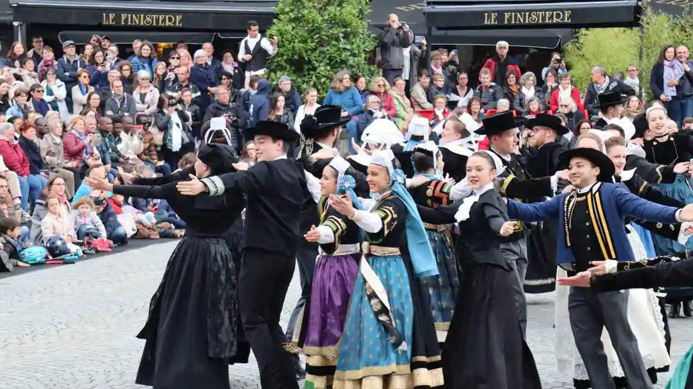

The youth relay

The youth relay is a massive 3000km walk that take
place everywhere in France to fight for ecology and
social justice. The march began on February 20 and will
last about 4 months. 20 stopover cities will be covered
during the event and many actions will be carried out to
raise people's awareness of ecology like meeting or concert.
another purpose of this event is to highlight ecology
during political campaigns for the presidential election.
In Rennes you will be able to take part in this event from
may 22 to 25.
Rennes : 30 000 trees to be planted 2026

Eighteen oak trees are already been planted near the town hall square.
The town hall has committed to plant 30 000 trees for 2026, with a variety
of trees that could resist the impact of global warming, with 123 000 trees
in the town of Rennes actually, this would benefit the quality of the air in the city.
The Marathon vert

The Marathon vert is a marathon organized each year since 2011 and it’s not a marathon like other because for each
kilometers traveled a tree will be planted. This year the races will start at Mail François-Mitterand, and end at
Esplanade Charles-de-Gaulle. This will be on October 22 at 19p.m for the 5km race and at 19:30p.m for the 10km race
and there is also other races the October 23.
Fête de la Bretagne 2022 : 13 May

The « Fête de la Bretagne » is unfolding the 13 May . Also known as Gouel Breizh, The « Fête de la Bretagne »
is an event that take place each year since 2007 around the period of May and last 9-10 days. More than 400 000 people
around the world gather to celebrate Brittany but it’s mostly developed in Brittany and its cities like Rennes, Brest,
Saint-Malo and other French metropolis like Paris or Lyon. This is the opportunity to discover the culture and traditions
of Brittany, eat local specialties, and participate in event like photo shoot, admire the works of Brittany’s artists,
learn more about the history of the land and listen to some traditional music.